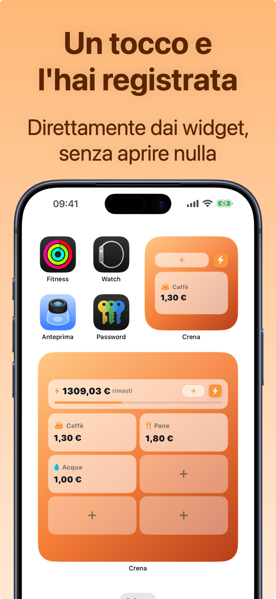

App per le spese senza collegare il conto corrente
Molte app di finanza personale chiedono le credenziali bancarie per importare i movimenti. Se l'idea non ti piace, non sei paranoico: un'app di spese può funzionare benissimo — spesso meglio — senza toccare il tuo conto. Ecco perché, e cosa cercare.
Perché evitare il collegamento bancario
- Privacy: i tuoi movimenti bancari raccontano tutto di te — dove vai, cosa compri, quanto guadagni. Meno soggetti li vedono, meglio è. Un'app senza collegamento non ha niente da fare trapelare.
- Contanti e mezzi misti: il collegamento bancario non vede i contanti, i buoni pasto, la carta di un altro circuito. Il tracciamento manuale copre tutto per definizione.
- Niente account, niente vincoli: se i dati stanno sul tuo telefono, non dipendi dai server di nessuno e non devi creare l'ennesimo account.
Il vantaggio nascosto: la consapevolezza
C'è anche un motivo di efficacia, non solo di privacy. L'import automatico ti rende spettatore delle tue spese: le guardi dopo, in blocco, quando ormai sono fatte. La registrazione manuale ti rende partecipe: il gesto di segnare 28,90€ di shopping nel momento in cui li spendi crea l'attrito buono, quello che dopo un mese ti fa dire "no, questo non mi serve". È lo stesso principio per cui scrivere a mano aiuta a ricordare.
L'obiezione classica è "ma segnare a mano è una fatica". Vero dieci anni fa: oggi la registrazione ben fatta costa due secondi — e con un widget, un tocco.

Cosa cercare in un'app senza conto
- Registrazione in pochi secondi (se è lenta, la abbandoni: è l'unico vero rischio del metodo manuale);
- Widget o scorciatoie per le spese di tutti i giorni;
- Categorie automatiche, budget mensile e statistiche;
- Dati sul dispositivo con backup/export che controlli tu;
- Ricorrenti per abbonamenti e stipendio, così il "manuale" resta minimo.
Come funziona Crena (senza il tuo conto)
- Scarica Crena: nessuna registrazione, nessun IBAN, nessuna credenziale bancaria. Apri e usi.
- I dati restano sul tuo iPhone; quando vuoi fai un backup o esporti l'estratto conto, e il file è tuo.
- Registri le spese in due secondi, con categoria suggerita; le più frequenti con un tocco dal widget.
- Stipendio e abbonamenti li metti nei Ricorrenti: si registrano da soli, quindi l'inserimento manuale riguarda solo le spese variabili.
- Budget, calendario e statistiche funzionano al 100%: tutto quello che fa un'app collegata alla banca, senza la banca.
Domande frequenti
Un'app senza collegamento bancario è meno precisa?
Che fine fanno i miei dati in Crena?
E se cambio telefono?
Prova Crena gratis
Spese in due secondi, budget mensile e statistiche chiare. Senza registrazione e senza collegare il conto.
Scarica suApp Store